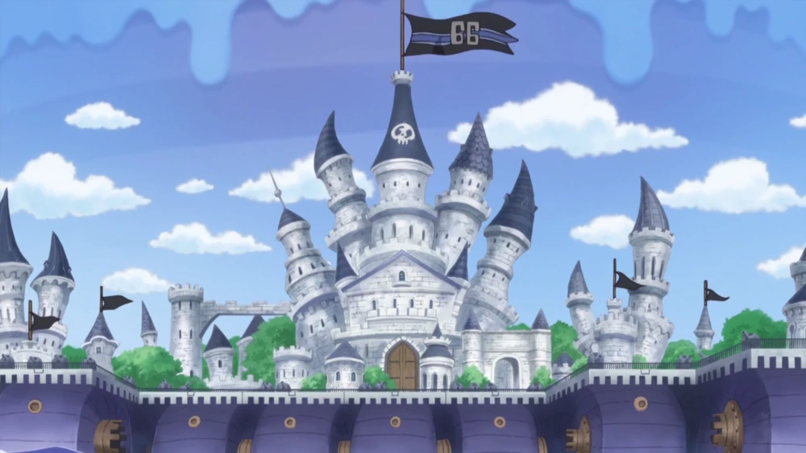
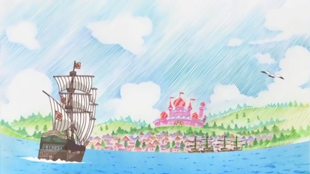
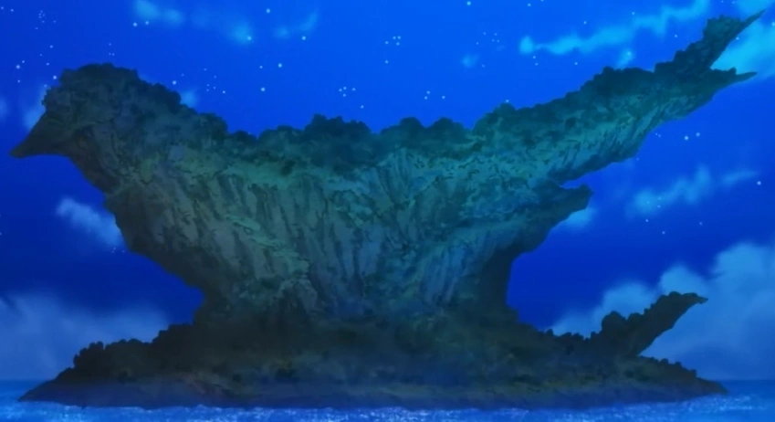

Germa Kingdom
Sanjiho rodná země, kdysi centrum impéria, dnes cestující království.

Lvneel
Rodná zem Mont Blanka Nolana a jeho potomka Mont Blanka Cricketa.

Spider Miles
Město ovládané Donquixote Family. Zde fungoval obchod se zbraněmi.

Flevance
Známé pro „Amber Lead“, ale těžba vedla k zamoření a zkáze města.

Swallow Island
Místo, kde byl nalezen Trafalgar Law po útěku z Flevance a kde se setkal s Corazónem.